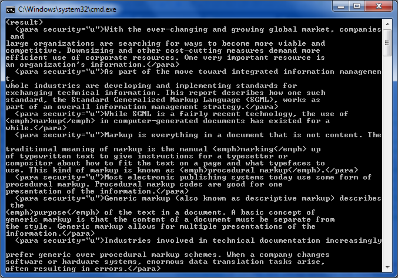

These samples demonstrate how to work with XmlReaderSettings and DtdProcessing to output an SGML document.

[Category("SGML - Standard Generalized Markup Language")]
[Description(@"Locate all paragraphs in the report (all ""para"" elements occurring anywhere within the ""report"" element).")]
public void Q42()
{
XDocument sgml = null;
// XDocument load by default does not resolve external entities so passing in our
// own reader with the correct setting.
XmlReaderSettings rs = new XmlReaderSettings();
rs.DtdProcessing = DtdProcessing.Parse;
using (XmlReader r = XmlReader.Create("sgml.xml", rs))
{
sgml = XDocument.Load(r);
}
var result = new XElement("result",
sgml.Descendants("report")
.Descendants("para"));
Console.WriteLine(result);
// Solution in XQuery:
// <result>
// {
// doc(""sgml.xml"")//report//para
// }
// </result>
}
[Category("SGML - Standard Generalized Markup Language")] [Description(@"Locate all paragraphs in the report (all ""para"" elements occurring anywhere within the ""report"" element).")] public void Q42() { XDocument sgml = null; // XDocument load by default does not resolve external entities so passing in our // own reader with the correct setting. XmlReaderSettings rs = new XmlReaderSettings(); rs.DtdProcessing = DtdProcessing.Parse; using (XmlReader r = XmlReader.Create("sgml.xml", rs)) { sgml = XDocument.Load(r); } var result = new XElement("result", sgml.Descendants("report") .Descendants("para")); Console.WriteLine(result); // Solution in XQuery: // <result> // { // doc(""sgml.xml"")//report//para // } // </result> }
For more information on LINQ to XML: http://msdn.microsoft.com/en-us/library/bb387098.aspx